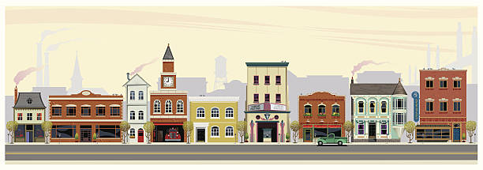

|
Deep Lake, Oregon "Where the Water Runs Deep and the Neighbors Run Deeper" |
 |
| HOME | ABOUT DEEP LAKE | CITY SERVICES | CALENDAR | PHOTO GALLERY | CONTACT US |
|
Quick Links
‣ City Council ‣ Parks & Recreation ‣ Public Works ‣ Police Department ‣ Fire Department ‣ Building Permits ‣ Utility Billing ‣ Employment ‣ Library Weather Currently: 54°F, Overcast (Updates may be delayed) Visitor Counter 002,847 Sister Cities None currently Beautiful Deep Lake at sunset |
Road Closure — Pine St Bridge
Posted: 06/12/2003 Pine Street bridge will be closed for repairs starting June 20th. Please use Elm Street detour. Expected completion: August 2003.
Summer Reading Program at the Library
Posted: 05/30/2003 The Deep Lake Public Library invites all children ages 6-14 to join our Summer Reading Program! Sign up at the front desk.
Water Main Flushing Schedule
Posted: 04/15/2003 Annual water main flushing will begin May 1st. Temporary discoloration is normal and not a health concern.
New Business: Mountain Creamery Now Open!
Posted: 03/22/2003 We're pleased to welcome Mountain Creamery to the Deep Lake business community! Stop by their new location on Route 7 for locally-made ice cream. About Deep Lake Deep Lake is a small community nestled in the Cascade Range of central Oregon. With a population of approximately 4,200 residents, our town offers the peace and quiet of rural living with convenient access to nearby cities. Photo Gallery
Community Calendar No events currently scheduled. Please check back later or contact City Hall for information about upcoming events. Page last updated: August 14, 2003 This website best viewed in Internet Explorer 5.0 or higher at 800x600 resolution. |
||||||||||
|
City of Deep Lake, Oregon • 120 Main Street • Deep Lake, OR 97701 • (541) 555-0100 © 2001 City of Deep Lake. All Rights Reserved. Questions about this website? Contact the Webmaster |